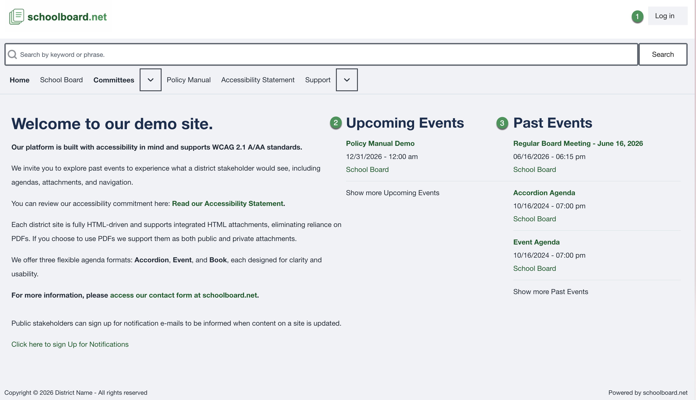

Board Member Quick Start¶
Use this page to get from the district home page to the materials for your meeting.
On a smaller screen, select ☰ Topics to open the documentation menu.
1. Sign inAccess authorized Board materials.
2. Find a meetingConfirm the correct date and group.
3. Review the agendaOpen sections and supporting items.
4. Open materialsRecognize public and private content.
Five-minute workflow¶
- Open the district's schoolboard.net site.
- Select Log in in the upper-right corner.
- Enter your Board Member username or email address and password.
- Return to Home after signing in if needed.
- Select the meeting under Upcoming Events or Past Events.
- Confirm the title, date, time, and Board or committee name.
- Select an agenda heading to expand it.
- Select a linked file or Read ... heading to open supporting material.
- Confirm that authorized private materials are visible.
- Refresh the live agenda shortly before the meeting.

Figure SB-BRD-001. District home page and meeting lists.
Use only your account
If another Board Member can see a private item that you cannot, contact the district administrator. Do not share accounts.
What do you need to do?¶
- Sign in or reset a password
- Review or update My Account
- Find the correct meeting
- Review an Accordion Agenda
- Open public and private materials
- Search or print
- Use keyboard navigation or get help
Related Topics¶
Revision History¶
| Version | Date | Status | Summary |
|---|---|---|---|
| 1.1 | 2026-07-13 | Distribution | Added My Account procedures and responsive topic navigation. |
| 1.0 | 2026-07-13 | Review Draft | Initial online-first Board Member help site using the approved SB-BRD screenshot set. |